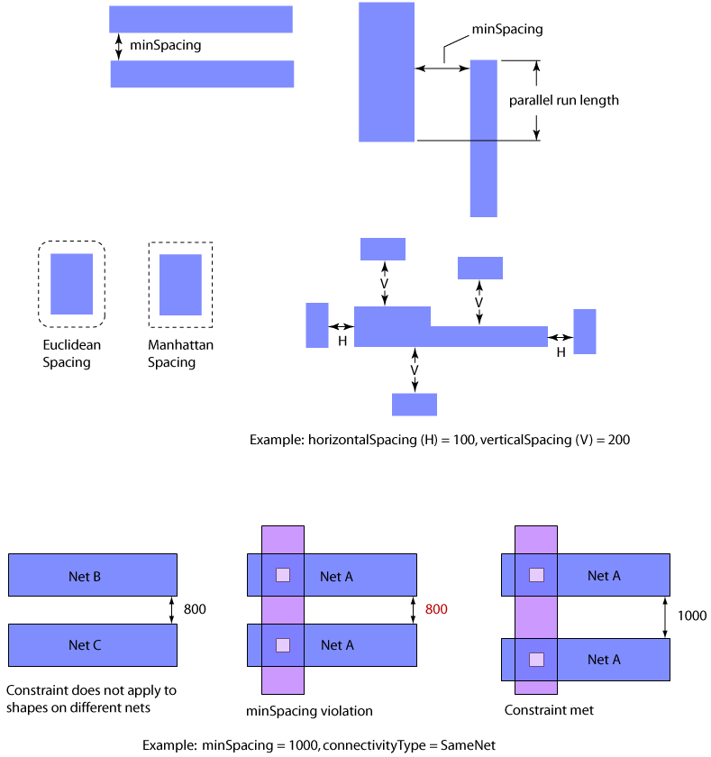

|
 |
 |
||||||
|
|
|
||||||
The built-in oacMinSpacing layer constraint determines the minimum orthogonal spacing required between two geometries on a specified layer. The distance is specified in database units. This constraint can be specified simply as the minimum spacing between any two adjacent geometries, specified as dependent on the spacing direction (vertical or horizontal) for adjacent geometries, specified as dependent on the wider of two geometries plus the parallel run length, and specified as dependent on the width of both geometries plus the parallel run length. The spacing can be either a Euclidian or Manhattan measure.
Optional parameters determine whether the constraint applies dependent on the type of connectivity and dependent on whether the shapes belong to power or ground nets.
| Constraint type: | oaLayerConstraint |
| Value types: | oaIntValue, oaInt1DTblValue, oaInt2DTblValue |
| Database types: | oaDesign, oaTech |
| Object types: | oaRect, oaPath, oaPolygon, oaPathSeg, oaRoute, oaPin, oaAreaBoundary, oaPRBoundary, oaLayerBlockage, oaAreaBlockage, oaScalarNet, oaBusNetBit, oaScalarInst, oaVectorInst, oaArrayInst, oaAppObject |
The following value types are supported by this constraint:
If the oaIntValue is specified, the value represents the minimum spacing in database units required between the two geometries.
Units: DBU
If an oaInt1DTblValue is specified, the lookup key ("width") in the table represents the width of the wider of the two shapes, and the value for the table represents the minimum spacing required between the two shapes in database units. The width of the shape is defined as the smaller of the shape's two dimensions.
Units: DBU
If an oaInt2DTblValue is specified, the interpretation of the keys depends on the value of the parameter oacWidthLengthTableType. If the value is oacWidthWidthTableType, both the rows and the columns represent the widths of the two shapes being analyzed. If the value is oacWidthParallelRunLengthTableType, the row lookup key ("width") in the table represents the width of the wider of the two shapes, the column lookup key ("length") in the table represents the parallel run length between the two shapes, and the value for the table represents the minimum spacing required between the two shapes in database units. The parallel run length between the two shapes is calculated as the distance in the lengthwise direction for which the two shapes are directly orthogonal (meaning that a line running perpendicular to the length would intersect both shapes at an angle of 90 degrees). If the value is oacTwoWidthParallelRunLengthTableType, the rows represent the widths and the columns represent the parallel run length
Units: DBU
The following parameters are supported by this constraint:
| Name | Value Type | Units | Default | Description | ||||||||||||
|---|---|---|---|---|---|---|---|---|---|---|---|---|---|---|---|---|
| widthLengthTableType oacWidthLengthTableTypeConstraintParamType |
oaIntValue | Enum | (Required) (only valid for value types: oaInt2DTblValue) |
oacWidthLengthTableTypeConstraintParamType is the table type. This parameter determines how the value of the constraint is interepreted. The value can be based on the widths of two shapes, based on the wider of two adjacent geometries and their parallel run length, or based on the width of both geometries and the parallel run length. The valid value for this parameter is an oaIntValue. This parameter is represented by an oaWidthLengthTableType enumeration:
|
||||||||||||
| distanceMeasureType oacDistanceMeasureTypeConstraintParamType |
oaIntValue | Enum | (Required) |
oacDistanceMeasureTypeConstraintParamType is the distance measure type, which determines whether the spacing values specified in the table values of the constraint are in either a Euclidian or Manhattan metric. The allowed value type for this parameter is an oaIntValue that is represented by an oaDistanceMeasureType enumeration. This parameter is represented by an oaDistanceMeasureType enumeration:
|
||||||||||||
| oaSpacingDirection oacSpacingDirectionConstraintParamType |
oaIntValue | Enum | any |
oacSpacingDirectionConstraintParamType is the spacing direction that represents the direction in which the constraint applies. This parameter is an oaIntValue type that uses one of the oaSpacingDirectionType enumeration values. This parameter is represented by an oaSpacingDirectionType enumeration:
|
||||||||||||
| oaConnectivityType oacConnectivityTypeConstraintParamType |
oaIntValue | Enum | any |
The optional oacConnectivityTypeConstraintParamType parameter uses an oaIntValue represented by one of the oaConnectivityType enumerations. If sameNetConnectivityType is specified, the constraint only applies to shapes on the same net. If contiguousShapesConnectivity is specified, the constraint only applies to contiguous (same metal) shapes. If not specified, the default value for this parameter is anyConnectivityType. This parameter is represented by an oaConnectivityType enumeration:
|
||||||||||||
| oaPGNet oacPGNetConstraintParamType |
oaBooleanValue | Boolean | False |
The optional oacPGNetConstraintParamType parameter uses a Boolean value. If true, this constraint only applies to power and ground nets. If not specified, the default value for this parameter is false. |
||||||||||||
| inLayerDirection oacInLayerDirectionConstraintParamType |
oaLayerValue | Layer Number | None |
The parameter specifies the direction in which the minimum spacing constraint applies. The direction is indicated by a shape on the specified layer which touches both shapes. |

Minimum spacing constraints help to ensure that geometries are not merged together during fabrication.
Copyright 2002 - 2010 Cadence Design Systems, Inc.
All rights reserved.